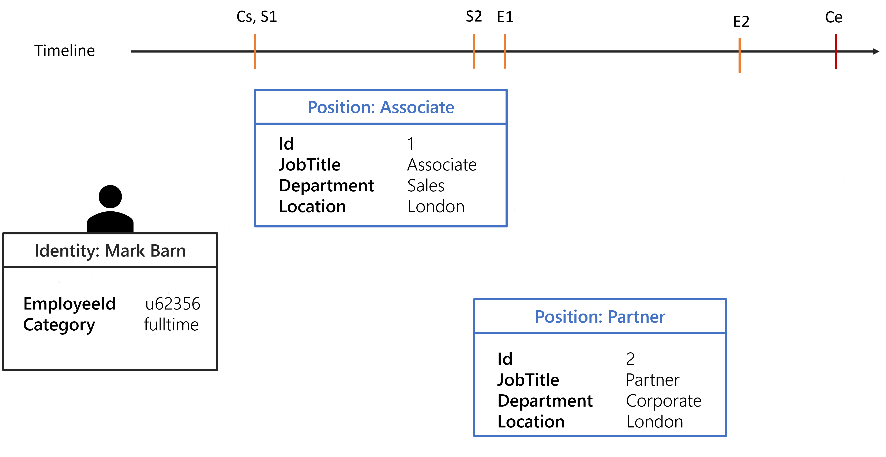
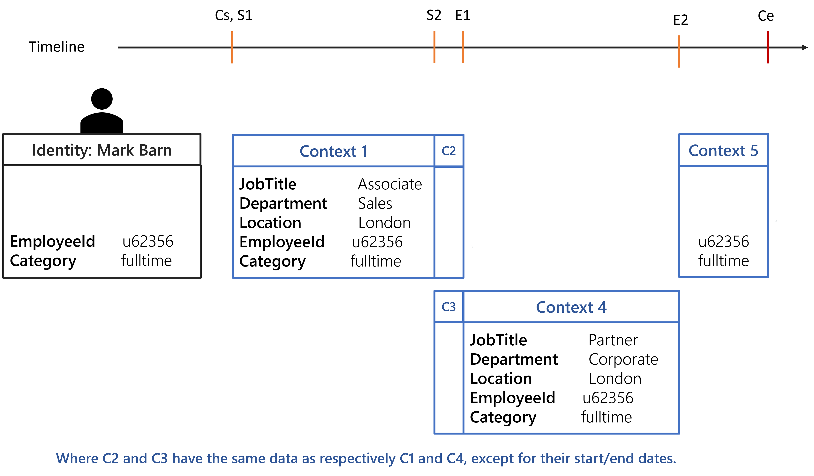
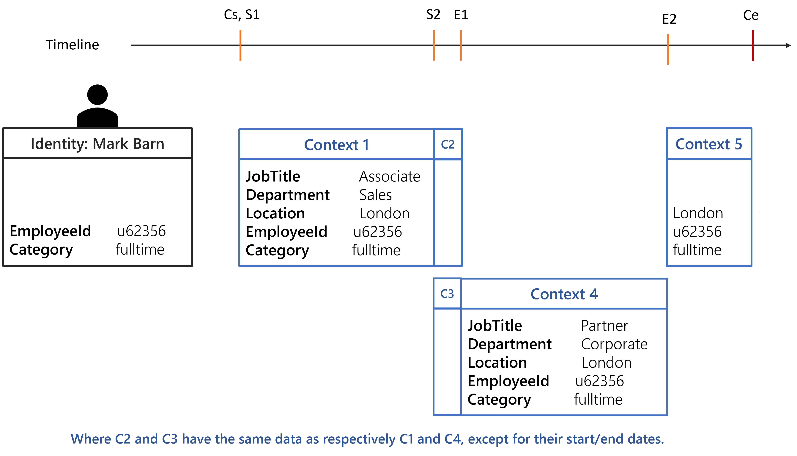
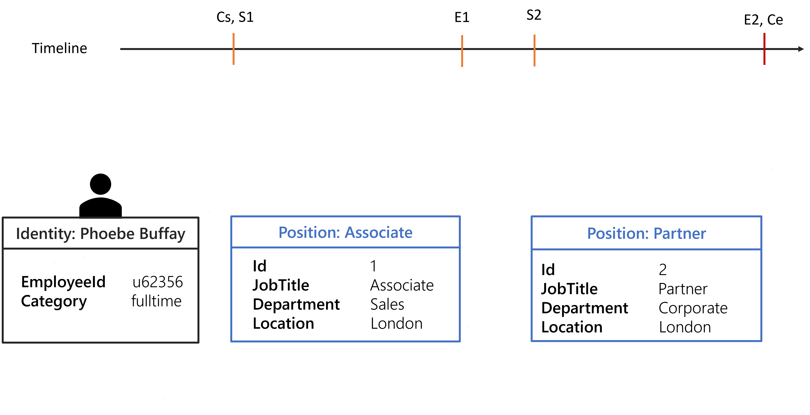
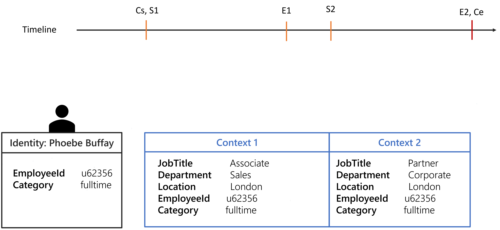

Generate Contexts
A context is a set of dimension-value pairs computed using the Context Rule or the combination of a context rule and the Record Section if record sections are configured.
A context is used to compute the role assignments for an identity by verifying that the dimension-value pairs meet the role criteria.
Basic Context Generation
When using only a context rule without a record section, the context generation is straightforward: a set of dimension-value pairs is created by computing the value of the dimension bindings on the Context Rule .
For example, the following context rule defines guests' contexts based on their start date, end date, and company.
<ContextRule Identifier="ContextRuleForGuest" DisplayName_L1="ContextRuleForGuest" Policy="Default" ResourcesStartBinding="Directory_Guest:StartDate" ResourcesEndBinding="Directory_Guest:EndDate" SourceEntityType="Directory_Guest" BA="Directory_Guest:Company" />
Identity Context Generation
As described in the Identity Management, identities are complex to model. Records were introduced to tackle this complexity by allowing multiple positions for the same identity.
Record Section go further by modeling the relationship between positions. Indeed with record sections, it is possible to define:
- what are the shared properties between all positions?
- what are the properties unique to each position?
- what happens when there is a time gap between two positions, should the previous be extended or should the future position be used to fill the gap?
- what happens when a position property value is not defined?
Before illustrating how the record sections can be configured to handle most cases of position management, here is the background situation for the examples that follow:
- A position is defined by a
JobTitle, aLocation, and aDepartment, all other properties belong to the identity and are shared between all positions. - Dimensions are
Category,JobTitle,Location, andDepartment. - Each position will have an
Id. Sxrepresents the start date of the position, and x is theIdof the position.Exrepresents the end date of the position, and x is theIdof the position.Csrepresents the contract start date.Cerepresents the contract end date.
The following configuration shows the context rule that will be used for the examples.
<ContextRule Identifier="ContextRuleUserToRecord" DisplayName_L1="ContextRuleUserToRecord" Policy="Default" ResourcesBinding="Records" ResourcesStartBinding="StartDate" ResourcesEndBinding="EndDate" B0="Directory_UserRecord:Department" B1="Directory_UserRecord:JobTitle" B2="Directory_UserRecord:Location" B3="Directory_UserRecord.Category" SourceEntityType="Directory_User" />
The context rule start/end dates bindings and expressions won't have any effect on the computation, they are overridden by the record sections dates properties.
Configuration of basic record sections
Default section:
<RecordSection Identifier="Directory_UserRecord_Default" DisplayName_L1="Contract Properties" SourceEntityType="Directory_User" ResourceEntityType="Directory_UserRecord" StartProperty="ContractStartDate" EndProperty="ContractEndDate">
</RecordSection>
Position record section:
<RecordSection Identifier="Directory_UserRecord_Position" DisplayName_L1="Position Properties" SourceEntityType="Directory_User" ResourceEntityType="Directory_UserRecord" StartProperty="StartDate" EndProperty="EndDate"> <Property Property="Department" ExtensionKind="None" /> <Property Property="Location" ExtensionKind="None" /> <Property Property="JobTitle" ExtensionKind="None" /></RecordSection>
The configuration above binds the position to the contract end date, meaning that a position without an end date will take the end date of the contract.
The properties of the position record section cannot be propagated, meaning if a position does not have a Location it cannot take the Location of the previous or future position.
The following image shows the positions of Mark Barn in a defined timeline.

With the given configuration and the identity of Mark Barn, the following contexts are generated:

Each computed context will be used to create a set of dimension-value pairs, thus having 3 sets for the Evaluate Policy algorithm.
Any rules targeting identities with a fulltimeCategory will be assigned to Mark Barn from Cs to Ce.
Any rules targeting identities working in London will be assigned to Mark Barn from S1 to E2.
Any rules targeting all identities will be assigned to Mark Barn from Cs to E2 because from E2 to Ce there isn't any position. This behavior can be overridden by specifying ExtensionKind="None" on the Directory_UserRecord_Position section.
Configuration of a position extension
Extension of a property
The record sections can help extend some position property value when for some time the identity does not have a position.
For example, let's say that an identity can have multiple positions but they must be in the same Location. So it is safe to configure the record sections to copy the Location from a position if:
- the identity does not have a position for some time;
- for a position, the
Locationis not defined.
Here is the configuration needed to apply this policy.
Default section:
<RecordSection Identifier="Directory_UserRecord_Default" DisplayName_L1="Contract Properties" SourceEntityType="Directory_User" ResourceEntityType="Directory_UserRecord" StartProperty="ContractStartDate" EndProperty="ContractEndDate">
</RecordSection>
Position record section:
<RecordSection Identifier="Directory_UserRecord_Position" DisplayName_L1="Position Properties" SourceEntityType="Directory_User" ResourceEntityType="Directory_UserRecord" StartProperty="StartDate" EndProperty="EndDate"> <Property Property="Department" ExtensionKind="None" />
<Property Property="Location" />
<Property Property="JobTitle" ExtensionKind="None" /></RecordSection>
The ExtensionKind="None" was removed for the Location property.
Using the identity of Mark Barn the computed contexts should be as followed:

Any rules targeting identities working in London will be assigned to Mark Barn from Cs to Ce.
Extension of a whole position
The property value copy can be leveraged to extend a chosen position when for some time the identity does not have one.
See the
Generate Contexts
topic for additional information. The following configuration and the identity of Phoebe Buffay will be used to showcase a position extension.
It is done by removing the ExtensionKind="None" of the position properties.
Default section:
<RecordSection Identifier="Directory_UserRecord_Default" DisplayName_L1="Contract Properties" SourceEntityType="Directory_User" ResourceEntityType="Directory_UserRecord" StartProperty="ContractStartDate" EndProperty="ContractEndDate">
</RecordSection>
Position record section:
<RecordSection Identifier="Directory_UserRecord_Position" DisplayName_L1="Position Properties" SourceEntityType="Directory_User" ResourceEntityType="Directory_UserRecord" StartProperty="StartDate" EndProperty="EndDate">
<Property Property="Department" /> <Property Property="Location" /> <Property Property="JobTitle" />
</RecordSection>

Two contexts will be generated.

By default, the previous position is extended when there is a gap. If there isn't any previous position then the next position will be anticipated.
The choice of the position to extend can be configured by leveraging the SortKeyExpression in the position
Record Section
.